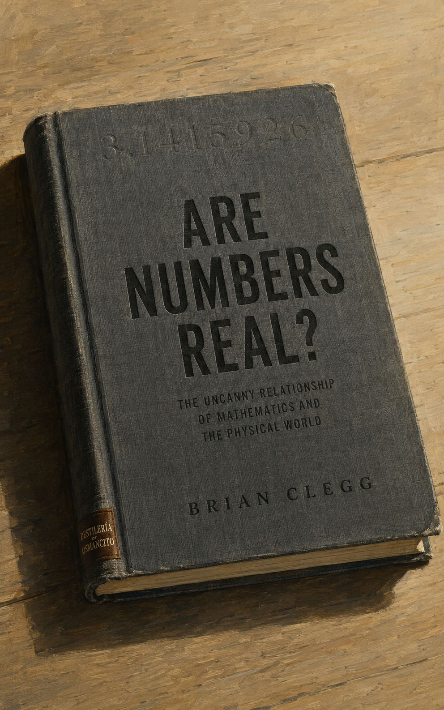
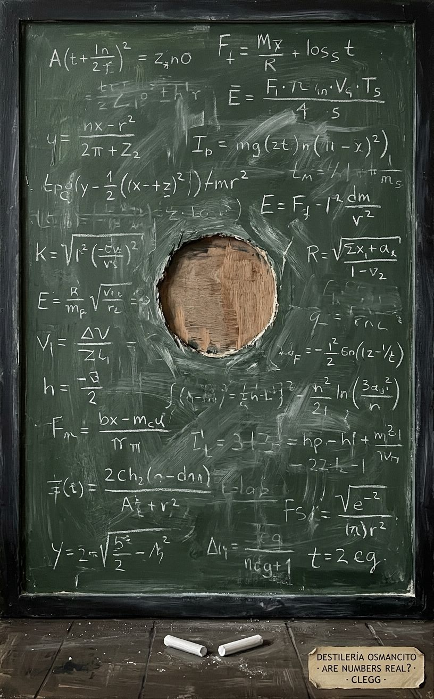

El libro llega como un ladrillo ligero: más preguntas de las que su cubierta promete, menos certezas de las que su tono divulgativo insinúa.


La pregunta que este libro instala no es si los números existen —es si la diferencia entre “existir” y “ser útil” importa. Clegg desentierra el momento histórico en que las matemáticas se despegaron del mundo para comprobarse a sí mismas, y desde ese instante el libro no para de preguntar si ese despegue fue emancipación o extravío. Lo más inquietante no está en los capítulos sobre física cuántica o teoría de cuerdas —está en los capítulos sobre conteo de cabras, donde ya se advierte que el número “uno” y la unidad que representa nunca fueron lo mismo.
El corpus llega cerrado sobre su propia pregunta: un libro sobre si los libros de matemáticas hablan del mundo o sobre algo más extraño que el mundo.
Are Numbers Real? no es un libro de matemáticas. Es un libro sobre lo que ocurre cuando la herramienta se vuelve más interesante que lo que construye. Clegg llega desde la física, no desde la filosofía, y eso lo protege: no viene a resolver la pregunta sino a pasearse por ella con cierta comodidad de practicante. El corpus produce en quien lo recibe una incomodidad particular —la de descubrir que algo que usó toda la vida podría no ser lo que pensaba que era.
Título — Are Numbers Real? The Uncanny Relationship of Mathematics and the Physical World Autor — Brian Clegg Año — 2016 (St. Martin’s Press) Género — Divulgación científica / Historia y filosofía de las matemáticas Extensión estimada — ~78,500 palabras / ~314 páginas (a 250 palabras/página) / 15 capítulos + notas e índice Idioma original — Inglés Palabra más frecuente con contenido — Real. Confirma: es lo que el corpus declara ser —la pregunta sobre la realidad de los números— y a la vez lo que más pone en cuestión. La palabra habita el título y regresa como fantasma a lo largo del texto.
El libro traza la historia de las matemáticas como disciplina desde los primeros sistemas de conteo prehistóricos hasta la física teórica contemporánea, persiguiendo una pregunta central: ¿los números y las estructuras matemáticas tienen existencia real e independiente del pensamiento humano, o son construcciones útiles sin referente en el universo? Clegg no resuelve la pregunta, pero la despliega con honestidad: muestra el momento en que las matemáticas se separaron del mundo físico para operar sobre sí mismas, examina cómo esa separación generó herramientas que luego resultaron útiles para la ciencia —de forma que nadie planeó—, y concluye con una pregunta sobre si la física teórica actual no ha ido demasiado lejos en su fe en la realidad matemática.
Figuras clave: - Pitágoras — fundador legendario del culto que afirmó que el universo está construido sobre números enteros; su escuela descubrió el problema que no podía resolver. - Hippasus — el pitagórico que, según la leyenda, fue asesinado por revelar la existencia de los irracionales. - Euclides — organizador del modelo axiomático que separó las matemáticas del trabajo sucio de medir y contar. - Isaac Newton / Gottfried Leibniz — inventores simultáneos del cálculo; el corpus los usa como bisagra entre las matemáticas al servicio de la ciencia y las matemáticas como lenguaje privilegiado. - Georg Cantor — creador de la teoría de conjuntos e inventor de la jerarquía de infinitos; su trabajo lleva al límite la pregunta de si la abstracción matemática toca algo real. - Max Tegmark — físico contemporáneo que propone que el universo es matemático; representa el extremo que el corpus quiere interrogar. - Zeno de Elea — sus paradojas (Aquiles y la tortuga) aparecen como primer ejemplo histórico de las tensiones entre lo que las matemáticas dicen y lo que la experiencia muestra.
El corpus se organiza como un recorrido histórico-conceptual en quince capítulos que siguen una línea temporal desde la prehistoria hasta el presente, interrumpida por digresiones filosóficas y experimentos mentales.
Capítulos 1–2 instalan la pregunta central a través de un experimento mental: inventar los números desde cero, comenzando con el conteo de cabras sin conceptos numéricos, luego con tallies, luego con palabras y símbolos. El argumento es que los números nacieron como adjetivos —“cinco cabras”— y la universalización fue un salto de abstracción tardío y no obvio.
Capítulo 3 presenta a los pitagóricos como primer caso de una comunidad que trató los números enteros como realidad fundamental del cosmos. Se expone la paradoja central: el mismo sistema que proclamaba la omnipotencia de los enteros descubrió que √2 no puede expresarse como razón de enteros —un irracional que destruía el edificio. La leyenda del asesinato de Hippasus funciona como emblema de la resistencia a que las matemáticas desafíen sus propias premisas.
Capítulo 4 cubre a Euclides y el modelo axiomático: las matemáticas ya no necesitan mundo real para avanzar. La geometría euclidiana como sistema cerrado que opera desde supuestos no demostrables hacia conclusiones necesarias. El corpus señala esto como el momento fundacional del “purismo” matemático.
Capítulo 5 trata a Arquímedes y la medición del mundo: el puente entre geometría teórica y aplicación física, incluyendo el cálculo aproximado de π.
Capítulo 6 cubre la historia del cero: su ausencia en Roma y Grecia, su desarrollo en India y su llegada a Europa a través de los árabes. El cero como concepto que obligó a tratar “nada” como objeto matemático manipulable —un salto filosófico enorme.
Capítulo 7 aborda los números negativos y su resistencia histórica: la dificultad de aceptar que algo puede ser “menos que nada” y cómo los mercaderes y contadores los normalizaron antes que los matemáticos.
Capítulo 8 trata los números imaginarios (√−1) como ejemplo paradigmático del método matemático: nadie los pidió para resolver un problema práctico, se inventaron como juego dentro de reglas autoimpuestas, y terminaron siendo indispensables para la física cuántica y la ingeniería eléctrica.
Capítulo 9 recorre la mecanización newtoniana del universo: el cálculo como herramienta para describir el movimiento, y el modo en que Newton y Leibniz creyeron estar leyendo el libro del universo, no escribiendo un modelo de él.
Capítulo 10 explora la probabilidad y la estadística, incluyendo la mecánica cuántica y la interpretación de Copenhague: el universo como lugar donde las matemáticas describen probabilidades, no certezas. El corpus introduce aquí la posibilidad de que las matemáticas no describan lo que ocurre sino solo lo que podemos predecir.
Capítulo 11 trata a Maxwell y el electromagnetismo: caso modelo de cómo las matemáticas “predijeron” la existencia de ondas electromagnéticas antes de que se las detectara. El corpus lo usa como argumento a favor de la realidad matemática —y luego lo matiza.
Capítulo 12 es el capítulo sobre el infinito: Cantor, sus jerarquías de infinitos, la resistencia que encontró, la locura que algunos le atribuyeron. El corpus lo presenta como el punto donde las matemáticas se alejan definitivamente de cualquier ancla intuitiva.
Capítulo 13 recorre los misterios matemáticos del siglo XX: el teorema de incompletitud de Gödel, el problema de la correspondencia entre matemáticas y realidad en la mecánica cuántica, el programa de Hilbert y su fracaso.
Capítulo 14 examina la teoría de grupos y la simetría como lenguaje dominante de la física moderna, incluyendo el Modelo Estándar de partículas y la teoría de cuerdas. Aquí el corpus articula su crítica más directa: la física teórica ha apostado por la belleza matemática como criterio de verdad, y eso puede ser un error.
Capítulo 15 cierra con la pregunta sin resolver: ¿es la física matemática contemporánea —teoría de cuerdas, multiverso— ciencia o “ciencia de cargo”? El corpus termina sin dictamen, pero la pregunta queda formulada con suficiente nitidez para incomodar.
El corpus produce una sensación específica: la de un libro escrito por alguien que confía genuinamente en las matemáticas y al mismo tiempo les tiene una desconfianza metódica. Clegg no es un escéptico —es un físico que sabe usar las herramientas y precisamente por eso puede preguntar si las herramientas son lo que parecen. El tono es el de la conversación inteligente de divulgación anglosajona: accesible sin ser condescendiente, histórico sin ser cronístico. Lo que el corpus no puede del todo ocultar es que la pregunta del título —¿son reales los números?— no recibe respuesta. El libro la pasea, la ilumina desde distintos ángulos históricos, la vuelve más rica y más difícil. Pero no la responde. Y eso, dependiendo del lector, es su mayor virtud o su mayor evasión.
1. La utilidad como prueba de existencia. El corpus regresa constantemente al mismo problema: las matemáticas inventadas “por juego” —imaginarios, geometrías no euclidianas, teoría de grupos— terminan describiendo el mundo físico con exactitud asombrosa. ¿Es eso evidencia de que las matemáticas son reales, o solo de que el universo y la mente humana comparten una estructura que nadie ha explicado aún? El corpus no elige bando, pero la tensión entre “es real porque funciona” y “funciona sin que sepamos por qué” atraviesa cada capítulo.
2. La abstracción como emancipación y como extravío. El momento en que las matemáticas se separaron del mundo físico —Euclides, los pitagóricos, los matemáticos puros del XIX— fue el que les permitió generar herramientas que luego resultaron útiles para la ciencia. Pero ese mismo movimiento es el que permite, hoy, construir teorías físicas que no pueden verificarse experimentalmente. El corpus no sabe si celebrar o lamentar esa separación. Ambas cosas al mismo tiempo.
3. El criterio de la belleza. La física teórica contemporánea —especialmente la teoría de cuerdas— usa la elegancia matemática como criterio de verdad. El corpus interroga eso sin resolverlo: ¿puede una teoría ser correcta porque es hermosa? ¿O la belleza de las matemáticas es una trampa que ha seducido a los físicos fuera del terreno de lo verificable?
Hay un momento en el capítulo inicial donde Clegg plantea la pregunta que sostiene todo el libro, y lo hace sin anestesia: ¿existirían los números si no hubiera nadie para pensarlos? No se trata de si los números del banco son reales —eso nadie lo duda—, sino de si el número cinco tiene existencia en el universo con independencia de cualquier mente que lo contemple. La pregunta parece fácil de descartar. Resulta que no lo es.
El experimento mental que propone Clegg para abrir el territorio es hacerse prehistórico: inventar los números desde cero. Se empieza doblando el meñique cada vez que una cabra sale del corral, y cuando las manos están cerradas, se sabe que el vecino se llevó un número de cabras —sin saber todavía qué número. No hace falta el concepto. Cuando el vecino devuelve las cabras y el proceso produce el mismo resultado, el préstamo está saldado. Lo que acaba de ocurrir es conteo sin números. Corresponder sin nombrar. Y ese primer escalón —tan previo, tan silencioso— es ya filosóficamente abismal. El matemático Richard Hamming lo articuló mejor que nadie: ¿no es asombroso que la abstracción de los enteros sea posible y útil? Que seis ovejas más siete ovejas den trece ovejas, exactamente igual que seis piedras más siete piedras. Que el universo esté construido de tal manera que eso funcione. Hamming lo llamó uno de los ejemplos más fuertes de la “irrazonable efectividad” de las matemáticas. Clegg usa esa asombro como punto de partida: si esto ya es misterioso, lo que viene después lo es aún más.
Lo que viene después es Pitágoras —o más bien la escuela que lleva su nombre, cuya relación con el Pitágoras histórico es incierta. Los pitagóricos creían, en serio, que el universo está construido sobre enteros. No como metáfora: como programa cosmológico. Cada número tenía personalidad: el 1 era la mente, el 2 la opinión, el 3 la totalidad, el 10 la perfección. Estudiaron las razones entre longitudes de cuerdas que producen armonías musicales y las trataron como ventanas a la estructura del cosmos. Y entonces aplicaron su propio teorema —la diagonal del cuadrado de lado 1 tiene que ser √2— y trataron de encontrar una fracción de enteros que fuera igual a ese valor.
La prueba de que no existe tal fracción es de una elegancia que todavía golpea después de dos mil quinientos años. Si √2 fuera igual a α/β en mínima expresión, entonces α² = 2β², lo que obliga a que α sea par, lo que obliga a que α² sea divisible por cuatro, lo que obliga a que β² sea par, lo que obliga a que β sea par. Contradicción: α y β no podían estar en mínima expresión si ambos son pares. No hay fracción. √2 es irracional. Y para los pitagóricos eso no era un hallazgo: era una catástrofe. Su universo entero descansaba sobre la premisa de que todo podía expresarse como razón de enteros. La leyenda dice que arrojaron al mar a Hippasus por revelar el secreto. Lo que importa no es si la leyenda es cierta, sino lo que representa: que un sistema matemático puede producir el resultado que destruye sus propias premisas, y que hay personas dispuestas a matar antes que aceptarlo.
Tres siglos después, Euclides sistematizó el conocimiento matemático en una arquitectura axiomática —partir de supuestos no demostrables y avanzar por pasos lógicos obligatorios hasta conclusiones necesarias— y con eso las matemáticas se separaron definitivamente del trabajo sucio de medir y contar. Se hicieron autónomas. Capaces de avanzar sin tocar nada del mundo. Esa autonomía es lo que hace posibles los imaginarios, el infinito de Cantor, la geometría de diez dimensiones. Y es también lo que hace posible que la física teórica construya castillos que nadie sabe si tienen suelo.
En el siglo XVII, Newton necesitaba calcular cómo cambian las cosas en un instante de tiempo. Su solución fue el método de las fluxiones: considerar un cambio infinitesimalmente pequeño en el tiempo —llamado o—, hacer los cálculos, y luego dejar que o “fluyera hacia cero”. El resultado era correcto. El procedimiento era matemáticamente cuestionable, porque en el paso crucial se cancelaba o arriba y abajo de una fracción —y si o es cero, eso es dividir cero entre cero, que no está permitido. Newton lo sabía y lo ocultó convirtiendo sus cálculos algebraicos en argumentos geométricos en el Principia. El obispo Berkeley lo detectó décadas después con una elegancia devastadora: esas fluxiones, escribió, son “los fantasmas de cantidades que ya no existen”. Y tenía razón. El problema no se resolvería hasta el siglo XIX, con Cauchy y Weierstrass. Pero el cálculo funcionaba perfectamente en el ínterin, fantasmas y todo. Ese es el tipo de situación que el libro estudia: una herramienta matemáticamente sospechosa que describe el mundo con exactitud extraordinaria.
También en el siglo XIX, Maxwell abandonó los modelos visuales —fluidos en sólidos porosos, células hexagonales girando— y construyó su teoría del electromagnetismo desde matemáticas puras, usando el formalismo lagrangiano. El resultado fue cuatro ecuaciones que, sin referirse a ningún mecanismo físico, predijeron la existencia de ondas electromagnéticas que viajaban a la velocidad de la luz. La conclusión fue que la luz es una onda electromagnética. Nadie lo había pedido. Nadie buscaba eso. Emergió de las matemáticas como consecuencia.
Y entonces Maxwell notó algo que no podía ser: las mismas ecuaciones tenían dos soluciones. La primera describía la onda “retardada” —la onda normal que viaja de A a B. La segunda describía una onda “avanzada” que viaja de B a A, partiendo desde el futuro hacia el pasado. Las matemáticas no decían que una solución fuera más real que la otra. Todos ignoraron la segunda durante décadas, porque violar la causalidad parecía absurdo. Wheeler y Feynman demostraron en los años cuarenta que las ondas avanzadas no solo existían en las ecuaciones sino que eran útiles: con ellas podían eliminarse ciertos infinitos que aparecían en la electrodinámica cuántica. Las matemáticas habían estado en lo correcto antes de que nadie supiera para qué servía tener razón.
Cantor llevó esta lógica hasta el límite. Su prueba de la diagonal es probablemente el argumento matemático más accesible y más perturbador del libro. Se supone que se puede listar todos los decimales entre 0 y 1. Cantor propone tomar el primer dígito decimal del primer número, el segundo dígito del segundo número, el tercero del tercero —y sumar 1 a cada uno. El decimal resultante difiere del primer número en su primera cifra, del segundo en su segunda cifra, y así indefinidamente: no está en la lista. No importa cómo se construya la lista —siempre se puede construir un decimal que no está en ella. Por lo tanto hay más decimales entre 0 y 1 que enteros. Hay infinitos más grandes que el infinito. Y la pregunta de si existe un infinito estrictamente entre el de los enteros y el de los reales —la hipótesis del continuo de Cantor— resultó ser indecidible: Gödel demostró que no es inconsistente con los axiomas, Cohen demostró que tampoco es necesaria. Dependiendo de qué axiomas adicionales se elijan, la hipótesis puede ser verdadera o falsa. La arquitectura matemática tiene una grieta en su fundamento, y ambas versiones son igualmente coherentes.
El teorema de Emmy Noether, demostrado en 1915, estableció que cada simetría en las leyes de la naturaleza corresponde a una ley de conservación, y viceversa. Simetría temporal implica conservación de energía. Simetría espacial implica conservación del momento. Simetría rotacional implica conservación del momento angular. Lo que Noether mostró no era solo una herramienta: era que las leyes de conservación que la física conocía no eran axiomas —eran consecuencias. Consecuencias de algo más profundo: la simetría del universo. A partir de ese descubrimiento, la simetría se convirtió en el motor principal de la física teórica. Heisenberg la usó para proponer que el protón y el neutrón eran el mismo objeto bajo dos estados de una simetría llamada isoespín. Gell-Mann la extendió para predecir los quarks antes de que existiera ninguna evidencia experimental directa de ellos. El Modelo Estándar de partículas —toda la zoología de electrones, quarks, gluones, bosones— emergió de la matemática de la simetría más que de los experimentos. Los experimentos confirmaron lo que las matemáticas predijeron.
El problema es que ese mismo proceso, aplicado sin ancla observacional, produce la teoría de cuerdas: un marco que requiere nueve o diez dimensiones espaciales, que tiene más soluciones posibles que protones en el universo observable, y que no genera ninguna predicción testable. Es definitivamente una teoría de todo, en el sentido de que todo y cualquier cosa puede ocurrir en ella. Ningún experimento puede falsificarla. En términos de Karl Popper —a quien Clegg rehabilita parcialmente— no es todavía una teoría científica. Es, en el mejor caso, una hipótesis que espera convertirse en ciencia.
El libro cierra con una distinción que concentra su argumento: las matemáticas producen hechos dentro de sistemas de reglas —dentro del sistema estándar, 2+2=4 no puede ser falso, y no hay evidencia que cambie eso—, mientras que la ciencia produce modelos que se comprueban contra la observación y siempre son revisables. Confundirlos es el error. Y Clegg ilustra ese error con un programa de ordenador de dos líneas: si el año es menor de 3000, imprimir “el sol saldrá mañana”; si no, imprimir “el sol no saldrá”. Ese programa predecirá correctamente el amanecer durante los próximos mil años. No tiene ninguna conexión con la física del sol. Que una fórmula funcione no prueba que describa lo que ocurre realmente —puede ser coincidencia estructural, modelo parcial, o simplemente suerte dentro de un rango. La efectividad no garantiza la verdad.
Los números naturales son probablemente reales, o al menos tienen una correspondencia con el mundo físico tan directa que la distinción no importa prácticamente. Todo lo que viene después —fracciones, imaginarios, infinitos, espacios de diez dimensiones— es una herramienta que a veces refleja el mundo y a veces no. Las matemáticas son el mejor método disponible para modelar el universo, pero los modelos no son el universo. No hay espejo matemático por el que Alice pueda pasar al otro lado.
Valor. El corpus merece el lugar que ocupa. No resuelve la pregunta del título —y sabe que no puede—, pero la despliega históricamente con honestidad y sin condescendencia. Hay argumentos reales aquí, no solo divulgación. El capítulo sobre Cantor y el cierre sobre la distinción entre matemáticas y ciencia tienen peso suficiente para quedarse.
Goce. Se disfruta en tramos. El libro es más cómodo que apasionado: el tono anglosajón de divulgación inteligente —accesible, algo irónico, bien documentado— produce una lectura fluida pero no ardiente. Cuando Clegg cita a Berkeley llamando “fantasmas de cantidades” a las fluxiones, o cuando describe a Cantor construyendo el decimal que no puede estar en ninguna lista, el libro levanta temperatura. Esos momentos justifican la lectura. El resto es el corredor que lleva hasta ellos.
El movimiento del libro es siempre el mismo: ingresar al pasado histórico, trazar cómo algo que empezó como representación de cabras termina siendo candidato a realidad fundamental del cosmos, y luego preguntar, sin responder, si eso es sabiduría o extravío.
El libro abre con una pregunta que parece absurda: ¿son reales los números? Clegg admite desde el principio que la pregunta no es sobre los números del banco, sino sobre si los números y las matemáticas tienen existencia factual en el universo. ¿Existirían sin que nadie los pensara, o son inventos humanos valiosos? El autor advierte que esta distinción tiene consecuencias reales para entender la ciencia.
El primer movimiento es cultural: hay una actitud negativa generalizada hacia las matemáticas en el mundo anglosajón —y probablemente en todas partes— que el autor documenta con un artículo del Guardian de 2012 sobre escolares británicos que “se desconectan” entre los siete y nueve años y no vuelven. Clegg sitúa esto frente a la utilidad práctica de las matemáticas: sin ellas, no hay ciencia ni tecnología moderna. Menciona el caso del colisionador SSC, que fue cancelado en favor de la Estación Espacial Internacional porque los políticos no podían visualizar para qué servía, aunque el SSC habría producido resultados diez años antes que el LHC. El punto es que las matemáticas que no se pueden explicar pierden financiación democrática.
El capítulo cierra planteando la pregunta de si los científicos como Max Tegmark —que propone que el universo es matemático, que los números son lo que hace que todo ocurra— confunden el mapa con el territorio. Esa pregunta acompaña al libro entero.
Este capítulo es el más concreto del libro y funciona como experimento mental fundacional. Clegg propone imaginar que hay que inventar los números desde cero. El mecanismo de partida es el conteo con dedos: doblar el meñique cuando sale una cabra del corral, hasta que la mano entera está cerrada. En ese momento se coloca el pulgar cruzado para indicar una cabra más. El vecino devuelve las cabras, se repite el proceso y, si el resultado coincide, el préstamo está saldado. No hace falta un concepto de “cuánto” —basta con la correspondencia biunívoca.
El siguiente paso es el tally: la tablilla de hueso de Ishango, encontrada en África central y datada en unos 20,000 años, que puede ser el registro de conteo más antiguo conocido, aunque podría ser decoración. Luego viene la invención de palabras para grupos: “mano” para cinco, “mano y dedo” para seis. Eventualmente estas palabras se escriben con símbolos propios —los “dígitos”, literalmente los dedos.
Clegg detalla el problema de universalidad: en la ciudad sumeria de Uruk, alrededor de 4000 a.C., los sistemas numéricos no eran únicos —había distintos sistemas para contar humanos y animales vivos, para contar granos y quesos, para contar pescado seco. La abstracción de que el número “cuatro” funciona igual para cabras que para sacos de trigo fue un salto conceptual que tardó en ocurrir y no era en absoluto obvio.
El capítulo introduce la cita de Richard Hamming sobre el asombro de que la abstracción de los enteros sea posible y útil —que seis ovejas más siete ovejas den trece ovejas, exactamente lo mismo que seis piedras más siete piedras dan trece piedras. Hamming lo llama uno de los más fuertes ejemplos de la “efectividad irrazonable” de las matemáticas.
También se describe cómo el conteo lleva inevitablemente a los primeros sistemas monetarios: un token por cabra, la posibilidad de guardar un token como crédito, y de ahí al dinero y a los servicios pagados. Los sistemas numéricos babilónicos en base 60 aparecen como ejemplo de que la base del sistema puede ser arbitraria, aunque la base 60 tiene la ventaja de ser divisible por 1, 2, 3, 4, 5, 6, 10, 12, 15, 20 y 30. Los griegos y romanos dan pasos atrás con sistemas más torpes que dificultan la aritmética elemental.
El capítulo aborda la escuela de Pitágoras, el primer caso documentado de un grupo humano que trató los números enteros como la realidad fundamental del cosmos. La frase “todo es número” estaba, según la leyenda, tallada sobre la puerta de la escuela. Los pitagóricos asignaban personalidades a los números: el 1 era la mente, el 2 la opinión, el 3 la totalidad, el 5 el matrimonio (suma del primer impar verdadero y el primer par), el 10 la perfección. Estudiaban los patrones musicales y los usaron por primera vez para formular lo que podría ser la primera ley científica cuantitativa: las razones entre longitudes de cuerdas que producen armonías agradables.
Clegg introduce aquí la paradoja central de la escuela pitagórica. Al aplicar su propio teorema a la diagonal de un cuadrado de lado 1, obtienen que esa diagonal mide √2. Y entonces tratan de encontrar una fracción de enteros que sea igual a √2. La prueba por contradicción de que no existe tal fracción es elegante y accesible: si √2 = α/β en mínima expresión, entonces α² = 2β², lo que implica que α es par, por lo tanto α² es divisible por 4, por lo tanto β² es par, por lo tanto β es par —contradicción con la hipótesis de que estaba en mínima expresión. La prueba es correcta. √2 es irracional.
Esto destruye el edificio pitagórico: si el universo está construido sobre enteros y sus razones, no puede haber una diagonal cuya longitud sea inexpresable como tal razón. La leyenda del asesinato de Hippasus —arrojado al mar por revelar los irracionales— funciona en el libro como metáfora del precio de los descubrimientos que contradicen las premisas del sistema que los produce.
Se mencionan los números amicables 220 y 284: los factores de 220 suman 284 y los factores de 284 suman 220. Los pitagóricos los consideraban genuinamente importantes como manifestación de la profundidad de los números. Clegg los usa como ejemplo de cómo una mente que trata los números como realidad fundamental no puede distinguir entre un patrón interesante y un hecho sobre el universo.
El capítulo cubre a Euclides —quien puede o no haber existido como persona individual— y el modelo axiomático de las matemáticas. El punto que más interesa a Clegg es que los Elementos no eran un libro de descubrimientos nuevos sino una recopilación y sistematización del conocimiento matemático existente, construida sobre axiomas y avanzando mediante pruebas rigurosas sin necesidad de tocar ni medir nada del mundo real. Con Euclides, las matemáticas se separan del trabajo sucio de los agrimensores.
El libro menciona el contraste con los egipcios y babilónicos: tenían conocimientos geométricos más avanzados en algunos aspectos, pero no les importaban las pruebas. Para ellos bastaba con que los números dieran el resultado correcto. Los griegos añadieron la pregunta de por qué tenían que dar ese resultado —y esa pregunta requería un sistema cerrado que no dependiera de la observación. Esa separación es, según Clegg, el mayor regalo y el mayor problema de las matemáticas: les da independencia del mundo y las hace susceptibles de alejarse indefinidamente de él.
Arquímedes aparece como contrapunto: alguien que tomó las matemáticas de regreso al mundo con entusiasmo. El capítulo describe El Contador de Arena, donde Arquímedes propone un sistema para nombrar números suficientemente grandes para contar los granos de arena que cabrían en el universo —usando el modelo de Aristarco de Samos, que ponía el Sol en el centro, no la Tierra. Arquímedes no necesariamente creía en ese modelo, pero lo usó porque producía el universo más grande disponible para su cálculo.
La lección del capítulo es que Arquímedes es el primero en usar las matemáticas de forma sistemáticamente científica: construye modelos, los evalúa contra la realidad, y ajusta. Es, según el autor, el primer antecedente claro del método científico, aunque no lo nombra así.
El cero. El capítulo recorre la historia del concepto más difícil de la aritmética básica: la representación matemática de la ausencia. Los babilónicos tenían un símbolo para posición vacía, pero nunca lo trataron como número manipulable. Los griegos lo rechazaron filosóficamente: el vacío no debería existir en un cosmos coherente. Los indios, entre los siglos V y VII d.C., dieron el salto: el cero no es solo ausencia, es un número, y puede sumarse, restarse y multiplicarse. La división por cero fue el escollo —Brahmagupta dijo que 0/0 = 0, Bhāskara dijo que era infinito, ninguno tenía razón en el sentido moderno.
El capítulo también cubre el sistema de numeración indo-arábigo —cómo llegó a Europa a través del árabe al-Jwarizmi, cuyo nombre transliterado al latín dio “algoritmo” y cuyo texto sobre cálculo dio “álgebra”— y la resistencia que encontró. Florencia prohibió el uso de dígitos arábigos en contabilidad en 1299 por temor al fraude, porque los numerales romanos eran más difíciles de falsificar. El cero y el sistema posicional cambiaron para siempre la aritmética práctica, pero tardaron siglos en ser aceptados.
El capítulo está centrado en Roger Bacon, el fraile franciscano del siglo XIII que insistió en que las matemáticas eran esenciales para entender la naturaleza y para la teología misma. Bacon escribió el Opus Majus bajo el encargo de un papa simpático y tuvo problemas con la Orden franciscana por sus posiciones. El capítulo lo presenta como primer defensor sistemático de las matemáticas como lenguaje de la ciencia, aunque practicaba un método más cercano al argumento filosófico que al experimento controlado.
Clegg usa a Bacon para establecer que en la Edad Media las matemáticas no desaparecieron: los Oxford Calculators del Merton College en el siglo XIV formularon el teorema de la velocidad media, que describe cómo calcular la distancia recorrida por un objeto con aceleración uniforme —antecedente directo del trabajo de Galileo y Newton. El punto del capítulo es que el desarrollo matemático fue más continuo de lo que el relato del “oscurantismo medieval” sugiere.
Los números imaginarios. Cardano, Tartaglia y el turbio mundo de los retos matemáticos públicos renacentistas sirven de contexto. El capítulo describe cómo Cardano publicó en 1545, en el Ars Magna, la solución a la ecuación cúbica —a pesar de haber jurado guardar secreto a Tartaglia, de quien obtuvo el método. El escándalo fue enorme. Pero lo que interesa a Clegg es que en el proceso Cardano topó con la raíz cuadrada de números negativos.
Cardano los llamó “tan sutiles como inútiles”. No tenían interpretación geométrica obvia. No representaban ninguna longitud ni cantidad física posible. Pero cuando se seguían las reglas del álgebra con ellos, producían resultados correctos. √−1, a la que más tarde se llamaría i, era un objeto que parecía no tener ninguna realidad —y terminó siendo indispensable para la física cuántica, la ingeniería eléctrica y el diseño de circuitos modernos.
El capítulo sostiene que los imaginarios son el ejemplo paradigmático del método matemático: nadie los pidió para resolver un problema práctico, se inventaron como consecuencia lógica de extender las reglas, y resultaron ser una herramienta irreemplazable. Nadie planeó que eso ocurriera.
Newton y el cálculo. El capítulo describe el método de las “fluxiones” de Newton —calcular el comportamiento en un instante de tiempo, dividiendo cambios infinitesimalmente pequeños— y su problema matemático central: en el paso crucial del cálculo, hay que cancelar o entre el numerador y el denominador, pero o ya se ha dejado fluir hacia cero, lo que implica dividir cero entre cero. Newton lo sabía y lo ocultó, traduciendo sus cálculos algebraicos a argumentos geométricos en el Principia.
Leibniz, trabajando independientemente, llegó a la misma herramienta con una notación diferente —dx/dt y el símbolo de integración ∫— que resultó más manejable. La disputa por la prioridad, incluyendo un comité de investigación cuyo presidente era el propio Newton, es uno de los episodios más tortuosos de la historia de la ciencia.
El obispo Berkeley señaló el problema matemático con precisión: las fluxiones son “los fantasmas de cantidades que ya no existen”. La solución llegaría en el siglo XIX con Cauchy y los límites, y con Weierstrass, que formalizó el mecanismo para probar que el cálculo funciona correctamente.
El capítulo introduce también la visión mecanicista del universo de Newton y Laplace: si se conocieran las posiciones y velocidades de todas las partículas, el futuro estaría completamente determinado. Ese universo-reloj preparó el terreno para preguntar si las matemáticas describen el mundo o si el mundo es matemático.
Probabilidad y estadística. El capítulo empieza con John Graunt, fabricante de botones del siglo XVII que analizó las “listas de mortalidad” de Londres y estableció las primeras estadísticas de esperanza de vida —sentando la base del negocio de los seguros. Cardano y su trabajo sobre juegos de azar se retoman aquí: fue el primero en representar probabilidades como números entre 0 y 1, y en descubrir las reglas para combinar probabilidades de eventos independientes y dependientes.
Pascal y Fermat resolvieron el “problema de los puntos”: cómo dividir el premio de un juego interrumpido antes de terminar, en función de las probabilidades de victoria de cada jugador. De ahí surgió el concepto de valor esperado, la base de los seguros y de buena parte de las finanzas modernas.
Clegg dedica una sección considerable al caso Sally Clark: una madre condenada por asesinato de sus dos hijos, fallecidos de Síndrome de Muerte Súbita Infantil, porque el perito médico multiplicó incorrectamente probabilidades de eventos que no son independientes (dos muertes en una misma familia son mucho más probables que en la población general si la primera ya ocurrió), y luego cometió el error lógico de invertir la probabilidad: una probabilidad baja de que algo ocurra por azar no implica una probabilidad alta de que haya habido crimen. Clark estuvo casi cuatro años en prisión antes de que la condena fuera revertida.
El capítulo examina el límite del valor esperado con la paradoja de San Petersburgo de Nicolás Bernoulli: un juego con valor esperado infinito al que sin embargo nadie pagaría un millón para jugar. Maxwell y la distribución estadística de velocidades de moléculas aparecen como ejemplo de cuándo la estadística funciona bien: cuando los individuos son idénticos y su número es enorme, la visión estadística puede ser extraordinariamente precisa.
James Clerk Maxwell. El capítulo lo presenta como el primer científico cuya teoría operó en abstracción completa de la realidad: sus ecuaciones del electromagnetismo, en su versión final, no derivan de ningún modelo mecánico sino de un tratamiento puramente matemático de los campos eléctrico y magnético, usando el formalismo lagrangiano —un sistema de ecuaciones diferenciales que produce resultados correctos sin requerir ningún modelo visual de lo que ocurre físicamente.
El camino hacia esas ecuaciones fue largo. Maxwell primero modeló el electromagnetismo como un fluido en un sólido poroso, luego como células hexagonales con esferas giratorias entre ellas. Cada modelo capturaba algo pero fallaba en otro aspecto. Cuando Maxwell abandonó los modelos análogos y comenzó a trabajar con matemáticas puras, sus cuatro ecuaciones —con su notación de tensores— produjeron una predicción que nadie buscaba: debería existir una onda electromagnética autosostenida que viajara a la velocidad de la luz. La conclusión fue que la luz es una onda electromagnética.
El capítulo introduce también las “ondas avanzadas”: una de las dos soluciones matemáticas a las ecuaciones de Maxwell predice ondas que viajan hacia atrás en el tiempo. Todos ignoraron esa solución durante décadas porque parecía absurda. Wheeler y Feynman demostraron en los años 40 que esas ondas no solo existen matemáticamente sino que son útiles para eliminar infinitos en la electrodinámica cuántica.
Cantor. El capítulo es el más denso y el más directamente filosófico del libro. Arranca con la distinción de Aristóteles entre infinito potencial (algo a lo que nos aproximamos sin alcanzar nunca) e infinito actual (el infinito realizado como objeto), y con su conclusión de que solo el primero existe. Esa visión dominó durante siglos, incluyendo el cálculo de Newton y Leibniz, donde el infinito es siempre un límite que se tiende pero nunca se alcanza.
Galileo fue la excepción: en sus Discursos sobre dos nuevas ciencias de 1638, describió cómo cada entero positivo puede emparejarse biunívocamente con su cuadrado, lo que implica que hay “tantos” cuadrados como enteros —aunque los cuadrados sean un subconjunto de los enteros. Galileo no resolvió la paradoja, la planteó.
Cantor la resolvió un siglo después, primero mediante la teoría de conjuntos y la cardinalidad —dos conjuntos tienen la misma cardinalidad si sus elementos pueden emparejarse biunívocamente, sin importar el tamaño— y luego con su prueba de la diagonal: si se listan todos los decimales entre 0 y 1, siempre es posible construir un decimal que difiere del primero en la primera cifra, del segundo en la segunda cifra, y así sucesivamente. Ese decimal no está en la lista. Por lo tanto, el conjunto de decimales entre 0 y 1 no puede emparejarse con los enteros: tiene una cardinalidad mayor. Hay infinitos más grandes que el infinito de los enteros —es una prueba de que existen distintos tamaños de infinito.
La hipótesis del continuo de Cantor —si existe o no un infinito estrictamente entre el de los enteros y el de los reales— resultó ser matemáticamente indecidible: Gödel demostró que no era inconsistente con los axiomas de la teoría de conjuntos, y Paul Cohen demostró que tampoco era necesaria. El sistema de axiomas ZFC que funda la teoría de conjuntos tiene en el axioma de la elección una grieta: para conjuntos infinitos, no siempre es posible definir un mecanismo de selección de un elemento, y dependiendo de cómo se resuelva esa grieta, se obtienen matemáticas distintas —algunas de las cuales hacen verdadera la hipótesis del continuo y otras que la hacen falsa.
El capítulo cierra con Tegmark, quien argumenta que la física debería liberarse del infinito porque produce predicciones absurdas, y con la observación de que el infinito real de Cantor probablemente no tiene correspondencia en el universo físico —aunque el universo podría ser infinito en extensión, la granularidad de la materia y del espacio impide la realización de los infinitos matemáticos.
Relatividad y mecánica cuántica. El capítulo empieza con una queja: en los institutos se sigue enseñando física del siglo XIX como si todo lo descubierto después no existiera, mientras en literatura nadie estudiaría solo lo anterior a 1890. Clegg propone que la relatividad especial es perfectamente accesible para estudiantes de secundaria.
La sección de relatividad especial explica el reloj de luz: un dispositivo que cuenta el tiempo mediante un rayo de luz que rebota entre dos espejos. Para los observadores en la nave, el rayo sube y baja verticalmente. Para los observadores en tierra, la nave se mueve y el rayo traza una diagonal —más larga. Como la velocidad de la luz es constante para todos los observadores (postulado de Einstein basado en las ecuaciones de Maxwell), el tiempo tiene que pasar más despacio en la nave. La matemática es solo geometría elemental y raíces cuadradas: el factor gamma es √(1 − v²/c²), y la dilatación temporal, la contracción de longitudes y el aumento de masa son consecuencias directas.
La relatividad general requirió geometría riemanniana —la geometría de superficies curvas— porque la curvatura del espacio-tiempo hace que las líneas “rectas” sean curvas. Las ecuaciones de campo de Einstein, detrás de su apariencia compacta, ocultan diez ecuaciones diferenciales acopladas que no tienen solución general. Schwarzschild produjo la primera solución exacta para un caso especial —el agujero negro— desde las trincheras de la Primera Guerra Mundial, meses después de que Einstein publicara la teoría.
La sección de mecánica cuántica describe cómo Heisenberg construyó una mecánica de matrices —sin ningún modelo visual de lo que ocurre— que predecía correctamente los comportamientos cuánticos. Schrödinger construyó en paralelo una mecánica de ondas. Inicialmente se pensó que la función de onda representaba la posición de la partícula, pero eso implicaría que las partículas se expanden indefinidamente —lo que no se observa. La interpretación correcta: la ecuación de Schrödinger predice la probabilidad de encontrar la partícula en cada lugar. Einstein nunca aceptó esto —“Dios no juega a los dados”— pero la interpretación probabilista de la cuántica está confirmada por innumerables experimentos.
Emmy Noether y el papel de la simetría en la física moderna. El teorema de Noether, probado en 1915, establece que para cada simetría en las leyes de la naturaleza existe una ley de conservación correspondiente, y viceversa. Si las leyes son invariantes ante traslaciones en el tiempo, se conserva la energía. Si son invariantes ante traslaciones en el espacio, se conserva el momento lineal. Si son invariantes ante rotaciones, se conserva el momento angular.
El capítulo sigue con la historia de cómo la simetría se convirtió en el motor principal de la física teórica del siglo XX. Heisenberg propuso que el protón y el neutrón —masa casi idéntica— podían tratarse como dos estados del mismo objeto bajo una simetría llamada “isoespín”. Gell-Mann añadió la “extrañeza” y organizó las partículas en grupos de ocho en patrones de asombrosa regularidad. Para explicar por qué esa simetría no era perfecta, propuso que las partículas estaban compuestas de objetos más pequeños —los quarks— en tres “sabores” (arriba, abajo, extraño) con masas distintas.
Luego llegó la cromodinámica cuántica, con quarks que tienen “color” (una propiedad que no tiene nada que ver con el color visual), gluones que transmiten la fuerza fuerte, y una simetría perfecta entre los gluones que no entre los quarks. El Modelo Estándar de partículas emergió como el sistema más completo, pero tiene parámetros que hay que introducir a mano desde la observación, y no explica la materia oscura.
La supersimetría propone que cada partícula conocida tiene un “compañero” supersimétrico. Simplificaría el modelo pero requeriría el doble de partículas —ninguna de las cuales ha sido observada. La teoría de cuerdas sustituye todas las partículas por un único objeto fundamental que vibra, pero requiere nueve o diez dimensiones espaciales y produce un número de soluciones posibles mayor que el de protones en el universo observable, sin ninguna predicción testable.
El capítulo final es el más explícitamente crítico. Clegg retoma el concepto de “cargo cult science” de Feynman —pseudociencia que imita la forma de la investigación sin practicar ciencia real— y propone que en la física teórica contemporánea ocurre algo parecido: los modelos matemáticos se han convertido en el objetivo en sí, no en una herramienta para entender el mundo.
El argumento central descansa en Eugene Wigner y su ensayo sobre la “irrazonable efectividad de las matemáticas en las ciencias naturales”. Wigner señala dos aspectos: primero, que las matemáticas desarrolladas por razones puramente abstractas terminan siendo útiles para describir el mundo físico (los números imaginarios, la geometría no euclidiana, la teoría de grupos); segundo, y más inquietante, que esto no significa que la matemática que funciona sea la que describe correctamente la realidad —podría ser una coincidencia local que deje de funcionar mañana.
El capítulo distingue entre matemáticas y ciencia: las matemáticas producen hechos dentro de un sistema de reglas (2+2=4 no puede ser falso en aritmética estándar), mientras que la ciencia produce modelos que se comprueban contra la observación y siempre son provisionales. Confundir un modelo con la realidad —que es lo que hace el físico que cree que el universo “es” matemático— es el error que el libro lleva quince capítulos diagnosticando.
Clegg cita al director del Perimeter Institute, Neil Turok: “Nos han dado pistas increíbles de la naturaleza y estamos fallando en darles sentido. Añadimos más campos, más dimensiones, más simetría —tiramos la cocina entera al problema— y sin embargo no conseguimos explicar los hechos más básicos.” El error es dejar que las matemáticas conduzcan la investigación en lugar de que la observación conduzca las matemáticas.
El cierre del libro propone una posición de compromiso: los números naturales son reales o tienen una correspondencia tan directa con objetos físicos que la distinción no importa. Las fracciones y la geometría tienen correspondencias aproximadas con el mundo. Los números imaginarios, el infinito de Cantor, los espacios de muchas dimensiones —son herramientas matemáticas que a veces reflejan la realidad y a veces no. Las matemáticas son el mejor método disponible para modelar el universo, pero los modelos no son el universo. No hay un espejo matemático por el que Alice pueda pasar al otro lado.